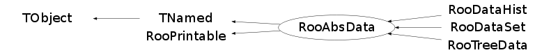

class RooAbsData: public TNamed, public RooPrintable
RooAbsData is the common abstract base class for binned and unbinned datasets. The abstract interface defines plotting and tabulating entry points for its contents and provides an iterator over its elements (bins for binned data sets, data points for unbinned datasets).
Function Members (Methods)
This is an abstract class, constructors will not be documented.
Look at the header to check for available constructors.
public:
| virtual | ~RooAbsData() |
| void | TObject::AbstractMethod(const char* method) const |
| virtual void | add(const RooArgSet& row, Double_t weight = 1, Double_t weightError = 0) |
| void | addOwnedComponent(const char* idxlabel, RooAbsData& data) |
| virtual void | TObject::AppendPad(Option_t* option = "") |
| void | attachBuffers(const RooArgSet& extObs) |
| virtual void | TObject::Browse(TBrowser* b) |
| Bool_t | canSplitFast() const |
| virtual Bool_t | changeObservableName(const char* from, const char* to) |
| void | checkInit() const |
| static void | claimVars(RooAbsData*) |
| static TClass* | Class() |
| virtual const char* | TObject::ClassName() const |
| virtual void | TNamed::Clear(Option_t* option = "") |
| virtual TObject* | TNamed::Clone(const char* newname = "") const |
| virtual Int_t | TNamed::Compare(const TObject* obj) const |
| void | convertToVectorStore() |
| virtual void | TNamed::Copy(TObject& named) const |
| Double_t | correlation(RooRealVar& x, RooRealVar& y, const char* cutSpec = 0, const char* cutRange = 0) const |
| TMatrixDSym* | correlationMatrix(const char* cutSpec = 0, const char* cutRange = 0) const |
| TMatrixDSym* | correlationMatrix(const RooArgList& vars, const char* cutSpec = 0, const char* cutRange = 0) const |
| Double_t | covariance(RooRealVar& x, RooRealVar& y, const char* cutSpec = 0, const char* cutRange = 0) const |
| TMatrixDSym* | covarianceMatrix(const char* cutSpec = 0, const char* cutRange = 0) const |
| TMatrixDSym* | covarianceMatrix(const RooArgList& vars, const char* cutSpec = 0, const char* cutRange = 0) const |
| TH1* | createHistogram(const char* name, const RooAbsRealLValue& xvar, const RooLinkedList& argList) const |
| TH1* | createHistogram(const char* varNameList, Int_t xbins = 0, Int_t ybins = 0, Int_t zbins = 0) const |
| TH1* | createHistogram(const char* name, const RooAbsRealLValue& xvar, const RooCmdArg& arg1 = RooCmdArg::none(), const RooCmdArg& arg2 = RooCmdArg::none(), const RooCmdArg& arg3 = RooCmdArg::none(), const RooCmdArg& arg4 = RooCmdArg::none(), const RooCmdArg& arg5 = RooCmdArg::none(), const RooCmdArg& arg6 = RooCmdArg::none(), const RooCmdArg& arg7 = RooCmdArg::none(), const RooCmdArg& arg8 = RooCmdArg::none()) const |
| virtual Int_t | defaultPrintContents(Option_t* opt) const |
| static ostream& | RooPrintable::defaultPrintStream(ostream* os = 0) |
| virtual RooPrintable::StyleOption | RooPrintable::defaultPrintStyle(Option_t* opt) const |
| virtual void | TObject::Delete(Option_t* option = "")MENU |
| virtual Int_t | TObject::DistancetoPrimitive(Int_t px, Int_t py) |
| virtual void | Draw(Option_t* option = "") |
| virtual void | TObject::DrawClass() constMENU |
| virtual TObject* | TObject::DrawClone(Option_t* option = "") constMENU |
| virtual void | TObject::Dump() constMENU |
| virtual RooAbsData* | emptyClone(const char* newName = 0, const char* newTitle = 0, const RooArgSet* vars = 0) const |
| virtual void | TObject::Error(const char* method, const char* msgfmt) const |
| virtual void | TObject::Execute(const char* method, const char* params, Int_t* error = 0) |
| virtual void | TObject::Execute(TMethod* method, TObjArray* params, Int_t* error = 0) |
| virtual void | TObject::ExecuteEvent(Int_t event, Int_t px, Int_t py) |
| virtual void | TObject::Fatal(const char* method, const char* msgfmt) const |
| virtual void | fill() |
| virtual void | TNamed::FillBuffer(char*& buffer) |
| virtual TH1* | fillHistogram(TH1* hist, const RooArgList& plotVars, const char* cuts = "", const char* cutRange = 0) const |
| virtual TObject* | TObject::FindObject(const char* name) const |
| virtual TObject* | TObject::FindObject(const TObject* obj) const |
| virtual const RooArgSet* | get() const |
| virtual const RooArgSet* | get(Int_t index) const |
| virtual Option_t* | TObject::GetDrawOption() const |
| static Long_t | TObject::GetDtorOnly() |
| virtual const char* | TObject::GetIconName() const |
| virtual const char* | TNamed::GetName() const |
| virtual char* | TObject::GetObjectInfo(Int_t px, Int_t py) const |
| static Bool_t | TObject::GetObjectStat() |
| virtual Option_t* | TObject::GetOption() const |
| Bool_t | getRange(RooRealVar& var, Double_t& lowest, Double_t& highest, Double_t marginFrac = 0, Bool_t symMode = kFALSE) const |
| RooAbsData* | getSimData(const char* idxstate) |
| virtual const char* | TNamed::GetTitle() const |
| virtual UInt_t | TObject::GetUniqueID() const |
| virtual Bool_t | TObject::HandleTimer(TTimer* timer) |
| Bool_t | hasFilledCache() const |
| virtual ULong_t | TNamed::Hash() const |
| virtual void | TObject::Info(const char* method, const char* msgfmt) const |
| virtual Bool_t | TObject::InheritsFrom(const char* classname) const |
| virtual Bool_t | TObject::InheritsFrom(const TClass* cl) const |
| virtual void | TObject::Inspect() constMENU |
| void | TObject::InvertBit(UInt_t f) |
| virtual TClass* | IsA() const |
| virtual Bool_t | TObject::IsEqual(const TObject* obj) const |
| virtual Bool_t | TObject::IsFolder() const |
| virtual Bool_t | isNonPoissonWeighted() const |
| Bool_t | TObject::IsOnHeap() const |
| virtual Bool_t | TNamed::IsSortable() const |
| virtual Bool_t | isWeighted() const |
| Bool_t | TObject::IsZombie() const |
| Double_t | kurtosis(RooRealVar& var, const char* cutSpec = 0, const char* cutRange = 0) const |
| virtual void | TNamed::ls(Option_t* option = "") const |
| void | TObject::MayNotUse(const char* method) const |
| Double_t | mean(RooRealVar& var, const char* cutSpec = 0, const char* cutRange = 0) const |
| RooRealVar* | meanVar(RooRealVar& var, const char* cutSpec = 0, const char* cutRange = 0) const |
| Double_t | moment(RooRealVar& var, Double_t order, const char* cutSpec = 0, const char* cutRange = 0) const |
| Double_t | moment(RooRealVar& var, Double_t order, Double_t offset, const char* cutSpec = 0, const char* cutRange = 0) const |
| static void | RooPrintable::nameFieldLength(Int_t newLen) |
| virtual Bool_t | TObject::Notify() |
| virtual Int_t | numEntries() const |
| void | TObject::Obsolete(const char* method, const char* asOfVers, const char* removedFromVers) const |
| static void | TObject::operator delete(void* ptr) |
| static void | TObject::operator delete(void* ptr, void* vp) |
| static void | TObject::operator delete[](void* ptr) |
| static void | TObject::operator delete[](void* ptr, void* vp) |
| void* | TObject::operator new(size_t sz) |
| void* | TObject::operator new(size_t sz, void* vp) |
| void* | TObject::operator new[](size_t sz) |
| void* | TObject::operator new[](size_t sz, void* vp) |
| RooAbsData& | operator=(const RooAbsData&) |
| virtual void | TObject::Paint(Option_t* option = "") |
| virtual RooPlot* | plotOn(RooPlot* frame, const RooLinkedList& cmdList) const |
| virtual RooPlot* | plotOn(RooPlot* frame, const RooCmdArg& arg1 = RooCmdArg::none(), const RooCmdArg& arg2 = RooCmdArg::none(), const RooCmdArg& arg3 = RooCmdArg::none(), const RooCmdArg& arg4 = RooCmdArg::none(), const RooCmdArg& arg5 = RooCmdArg::none(), const RooCmdArg& arg6 = RooCmdArg::none(), const RooCmdArg& arg7 = RooCmdArg::none(), const RooCmdArg& arg8 = RooCmdArg::none()) const |
| virtual void | TObject::Pop() |
| virtual void | Print(Option_t* options = 0) const |
| virtual void | RooPrintable::printAddress(ostream& os) const |
| virtual void | RooPrintable::printArgs(ostream& os) const |
| virtual void | printClassName(ostream& os) const |
| virtual void | RooPrintable::printExtras(ostream& os) const |
| virtual void | printMultiline(ostream& os, Int_t contents, Bool_t verbose = kFALSE, TString indent = "") const |
| virtual void | printName(ostream& os) const |
| virtual void | RooPrintable::printStream(ostream& os, Int_t contents, RooPrintable::StyleOption style, TString indent = "") const |
| virtual void | printTitle(ostream& os) const |
| virtual void | RooPrintable::printTree(ostream& os, TString indent = "") const |
| virtual void | RooPrintable::printValue(ostream& os) const |
| virtual Int_t | TObject::Read(const char* name) |
| virtual void | TObject::RecursiveRemove(TObject* obj) |
| RooAbsData* | reduce(const char* cut) |
| RooAbsData* | reduce(const RooFormulaVar& cutVar) |
| RooAbsData* | reduce(const RooArgSet& varSubset, const char* cut = 0) |
| RooAbsData* | reduce(const RooArgSet& varSubset, const RooFormulaVar& cutVar) |
| RooAbsData* | reduce(const RooCmdArg& arg1, const RooCmdArg& arg2 = RooCmdArg(), const RooCmdArg& arg3 = RooCmdArg(), const RooCmdArg& arg4 = RooCmdArg(), const RooCmdArg& arg5 = RooCmdArg(), const RooCmdArg& arg6 = RooCmdArg(), const RooCmdArg& arg7 = RooCmdArg(), const RooCmdArg& arg8 = RooCmdArg()) |
| static Bool_t | releaseVars(RooAbsData*) |
| virtual void | reset() |
| void | TObject::ResetBit(UInt_t f) |
| void | resetBuffers() |
| RooRealVar* | rmsVar(RooRealVar& var, const char* cutSpec = 0, const char* cutRange = 0) const |
| virtual void | TObject::SaveAs(const char* filename = "", Option_t* option = "") constMENU |
| virtual void | TObject::SavePrimitive(ostream& out, Option_t* option = "") |
| void | TObject::SetBit(UInt_t f) |
| void | TObject::SetBit(UInt_t f, Bool_t set) |
| static void | setDefaultStorageType(RooAbsData::StorageType s) |
| void | setDirtyProp(Bool_t flag) |
| virtual void | TObject::SetDrawOption(Option_t* option = "")MENU |
| static void | TObject::SetDtorOnly(void* obj) |
| virtual void | TNamed::SetName(const char* name)MENU |
| virtual void | TNamed::SetNameTitle(const char* name, const char* title) |
| static void | TObject::SetObjectStat(Bool_t stat) |
| virtual void | TNamed::SetTitle(const char* title = "")MENU |
| virtual void | TObject::SetUniqueID(UInt_t uid) |
| virtual void | ShowMembers(TMemberInspector& insp) |
| Double_t | sigma(RooRealVar& var, const char* cutSpec = 0, const char* cutRange = 0) const |
| virtual Int_t | TNamed::Sizeof() const |
| Double_t | skewness(RooRealVar& var, const char* cutSpec = 0, const char* cutRange = 0) const |
| virtual TList* | split(const RooAbsCategory& splitCat, Bool_t createEmptyDataSets = kFALSE) const |
| Double_t | standMoment(RooRealVar& var, Double_t order, const char* cutSpec = 0, const char* cutRange = 0) const |
| virtual RooPlot* | statOn(RooPlot* frame, const RooCmdArg& arg1 = RooCmdArg::none(), const RooCmdArg& arg2 = RooCmdArg::none(), const RooCmdArg& arg3 = RooCmdArg::none(), const RooCmdArg& arg4 = RooCmdArg::none(), const RooCmdArg& arg5 = RooCmdArg::none(), const RooCmdArg& arg6 = RooCmdArg::none(), const RooCmdArg& arg7 = RooCmdArg::none(), const RooCmdArg& arg8 = RooCmdArg::none()) |
| virtual RooPlot* | statOn(RooPlot* frame, const char* what, const char* label = "", Int_t sigDigits = 2, Option_t* options = "NELU", Double_t xmin = 0.15, Double_t xmax = 0.65, Double_t ymax = 0.85, const char* cutSpec = 0, const char* cutRange = 0, const RooCmdArg* formatCmd = 0) |
| RooAbsDataStore* | store() |
| const RooAbsDataStore* | store() const |
| virtual void | Streamer(TBuffer& b) |
| void | StreamerNVirtual(TBuffer& b) |
| virtual Double_t | sumEntries() const |
| virtual Double_t | sumEntries(const char* cutSpec, const char* cutRange = 0) const |
| virtual void | TObject::SysError(const char* method, const char* msgfmt) const |
| virtual Roo1DTable* | table(const RooArgSet& catSet, const char* cuts = "", const char* opts = "") const |
| virtual Roo1DTable* | table(const RooAbsCategory& cat, const char* cuts = "", const char* opts = "") const |
| Bool_t | TObject::TestBit(UInt_t f) const |
| Int_t | TObject::TestBits(UInt_t f) const |
| const TTree* | tree() const |
| virtual void | TObject::UseCurrentStyle() |
| virtual Bool_t | valid() const |
| virtual void | TObject::Warning(const char* method, const char* msgfmt) const |
| virtual Double_t | weight() const |
| virtual Double_t | weightError(RooAbsData::ErrorType etype = Poisson) const |
| virtual void | weightError(Double_t& lo, Double_t& hi, RooAbsData::ErrorType etype = Poisson) const |
| virtual Int_t | TObject::Write(const char* name = 0, Int_t option = 0, Int_t bufsize = 0) |
| virtual Int_t | TObject::Write(const char* name = 0, Int_t option = 0, Int_t bufsize = 0) const |
protected:
| Bool_t | allClientsCached(RooAbsArg*, const RooArgSet&) |
| virtual void | attachCache(const RooAbsArg* newOwner, const RooArgSet& cachedVars) |
| virtual void | cacheArgs(const RooAbsArg* owner, RooArgSet& varSet, const RooArgSet* nset = 0) |
| virtual RooAbsData* | cacheClone(const RooAbsArg* newCacheOwner, const RooArgSet* newCacheVars, const char* newName = 0) |
| Double_t | corrcov(RooRealVar& x, RooRealVar& y, const char* cutSpec, const char* cutRange, Bool_t corr) const |
| TMatrixDSym* | corrcovMatrix(const RooArgList& vars, const char* cutSpec, const char* cutRange, Bool_t corr) const |
| RooRealVar* | dataRealVar(const char* methodname, RooRealVar& extVar) const |
| virtual void | TObject::DoError(int level, const char* location, const char* fmt, va_list va) const |
| void | TObject::MakeZombie() |
| virtual void | optimizeReadingWithCaching(RooAbsArg& arg, const RooArgSet& cacheList, const RooArgSet& keepObsList) |
| virtual RooPlot* | plotAsymOn(RooPlot* frame, const RooAbsCategoryLValue& asymCat, RooAbsData::PlotOpt o) const |
| virtual RooPlot* | plotEffOn(RooPlot* frame, const RooAbsCategoryLValue& effCat, RooAbsData::PlotOpt o) const |
| virtual RooPlot* | plotOn(RooPlot* frame, RooAbsData::PlotOpt o) const |
| virtual RooAbsData* | reduceEng(const RooArgSet& varSubset, const RooFormulaVar* cutVar, const char* cutRange = 0, Int_t nStart = 0, Int_t nStop = 2000000000, Bool_t copyCache = kTRUE) |
| virtual void | resetCache() |
| virtual void | setArgStatus(const RooArgSet& set, Bool_t active) |
Data Members
public:
| enum ErrorType { | Poisson | |
| SumW2 | ||
| None | ||
| Auto | ||
| }; | ||
| enum StorageType { | Tree | |
| Vector | ||
| }; | ||
| enum TObject::EStatusBits { | kCanDelete | |
| kMustCleanup | ||
| kObjInCanvas | ||
| kIsReferenced | ||
| kHasUUID | ||
| kCannotPick | ||
| kNoContextMenu | ||
| kInvalidObject | ||
| }; | ||
| enum TObject::[unnamed] { | kIsOnHeap | |
| kNotDeleted | ||
| kZombie | ||
| kBitMask | ||
| kSingleKey | ||
| kOverwrite | ||
| kWriteDelete | ||
| }; | ||
| enum RooPrintable::ContentsOption { | kName | |
| kClassName | ||
| kValue | ||
| kArgs | ||
| kExtras | ||
| kAddress | ||
| kTitle | ||
| kCollectionHeader | ||
| }; | ||
| enum RooPrintable::StyleOption { | kInline | |
| kSingleLine | ||
| kStandard | ||
| kVerbose | ||
| kTreeStructure | ||
| }; |
public:
| static RooAbsData::StorageType | defaultStorageType |
protected:
| TIterator* | _cacheIter | ! Iterator over cached variables |
| RooArgSet | _cachedVars | ! External variables cached with this data set |
| RooAbsDataStore* | _dstore | Data storage implementation |
| TIterator* | _iterator | ! Iterator over dimension variables |
| static Int_t | RooPrintable::_nameLength | |
| map<std::string,RooAbsData*> | _ownedComponents | Owned external components |
| RooArgSet | _vars | Dimensions of this data set |
| TString | TNamed::fName | object identifier |
| TString | TNamed::fTitle | object title |
Class Charts
{kind=link}
{kind=link}
{kind=link}
{kind=link}

Function documentation
void setDefaultStorageType(RooAbsData::StorageType s)
void claimVars(RooAbsData* )
Bool_t changeObservableName(const char* from, const char* to)
void fill()
Int_t numEntries() const
void reset()
void cacheArgs(const RooAbsArg* owner, RooArgSet& varSet, const RooArgSet* nset = 0)
Internal method -- Cache given set of functions with data
void attachCache(const RooAbsArg* newOwner, const RooArgSet& cachedVars)
Internal method -- Attach dataset copied with cache contents to copied instances of functions
void setArgStatus(const RooArgSet& set, Bool_t active)
RooAbsData* reduce(const RooCmdArg& arg1, const RooCmdArg& arg2 = RooCmdArg(), const RooCmdArg& arg3 = RooCmdArg(), const RooCmdArg& arg4 = RooCmdArg(), const RooCmdArg& arg5 = RooCmdArg(), const RooCmdArg& arg6 = RooCmdArg(), const RooCmdArg& arg7 = RooCmdArg(), const RooCmdArg& arg8 = RooCmdArg())
Create a reduced copy of this dataset. The caller takes ownership of the returned dataset The following optional named arguments are accepted SelectVars(const RooArgSet& vars) -- Only retain the listed observables in the output dataset Cut(const char* expression) -- Only retain event surviving the given cut expression Cut(const RooFormulaVar& expr) -- Only retain event surviving the given cut formula CutRange(const char* name) -- Only retain events inside range with given name. Multiple CutRange arguments may be given to select multiple ranges EventRange(int lo, int hi) -- Only retain events with given sequential event numbers Name(const char* name) -- Give specified name to output dataset Title(const char* name) -- Give specified title to output dataset
RooAbsData* reduce(const char* cut)
Create a subset of the data set by applying the given cut on the data points. The cut expression can refer to any variable in the data set. For cuts involving other variables, such as intermediate formula objects, use the equivalent reduce method specifying the as a RooFormulVar reference.
RooAbsData* reduce(const RooFormulaVar& cutVar)
Create a subset of the data set by applying the given cut on the data points. The 'cutVar' formula variable is used to select the subset of data points to be retained in the reduced data collection.
RooAbsData* reduce(const RooArgSet& varSubset, const char* cut = 0)
Create a subset of the data set by applying the given cut on the data points and reducing the dimensions to the specified set. The cut expression can refer to any variable in the data set. For cuts involving other variables, such as intermediate formula objects, use the equivalent reduce method specifying the as a RooFormulVar reference.
RooAbsData* reduce(const RooArgSet& varSubset, const RooFormulaVar& cutVar)
Create a subset of the data set by applying the given cut on the data points and reducing the dimensions to the specified set. The 'cutVar' formula variable is used to select the subset of data points to be retained in the reduced data collection.
Double_t weightError(RooAbsData::ErrorType etype = Poisson) const
Return error on current weight (dummy implementation returning zero)
void weightError(Double_t& lo, Double_t& hi, RooAbsData::ErrorType etype = Poisson) const
Return asymmetric error on weight. (Dummy implementation returning zero)
RooPlot* plotOn(RooPlot* frame, const RooCmdArg& arg1 = RooCmdArg::none(), const RooCmdArg& arg2 = RooCmdArg::none(), const RooCmdArg& arg3 = RooCmdArg::none(), const RooCmdArg& arg4 = RooCmdArg::none(), const RooCmdArg& arg5 = RooCmdArg::none(), const RooCmdArg& arg6 = RooCmdArg::none(), const RooCmdArg& arg7 = RooCmdArg::none(), const RooCmdArg& arg8 = RooCmdArg::none()) const
Plot dataset on specified frame. By default an unbinned dataset will use the default binning of the target frame. A binned dataset will by default retain its intrinsic binning. The following optional named arguments can be used to modify the default behavior Data representation options Asymmetry(const RooCategory& c) -- Show the asymmetry of the daya in given two-state category [F(+)-F(-)] / [F(+)+F(-)]. Category must have two states with indices -1 and +1 or three states with indeces -1,0 and +1. DataError(RooAbsData::EType) -- Select the type of error drawn: Poisson (default) draws asymmetric Poisson confidence intervals. SumW2 draws symmetric sum-of-weights error Binning(double xlo, double xhi, -- Use specified binning to draw dataset int nbins) Binning(const RooAbsBinning&) -- Use specified binning to draw dataset Binning(const char* name) -- Use binning with specified name to draw dataset RefreshNorm(Bool_t flag) -- Force refreshing for PDF normalization information in frame. If set, any subsequent PDF will normalize to this dataset, even if it is not the first one added to the frame. By default only the 1st dataset added to a frame will update the normalization information Rescale(Double_t factor) -- Apply global rescaling factor to histogram Histogram drawing options DrawOption(const char* opt) -- Select ROOT draw option for resulting TGraph object LineStyle(Int_t style) -- Select line style by ROOT line style code, default is solid LineColor(Int_t color) -- Select line color by ROOT color code, default is black LineWidth(Int_t width) -- Select line with in pixels, default is 3 MarkerStyle(Int_t style) -- Select the ROOT marker style, default is 21 MarkerColor(Int_t color) -- Select the ROOT marker color, default is black MarkerSize(Double_t size) -- Select the ROOT marker size XErrorSize(Double_t frac) -- Select size of X error bar as fraction of the bin width, default is 1 Misc. other options Name(const chat* name) -- Give curve specified name in frame. Useful if curve is to be referenced later Invisble(Bool_t flag) -- Add curve to frame, but do not display. Useful in combination AddTo() AddTo(const char* name, -- Add constructed histogram to already existing histogram with given name and relative weight factors double_t wgtSelf, double_t wgtOther)
TH1 * createHistogram(const char* varNameList, Int_t xbins = 0, Int_t ybins = 0, Int_t zbins = 0) const
Create and fill a ROOT histogram TH1,TH2 or TH3 with the values of this dataset for the variables with given names The range of each observable that is histogrammed is always automatically calculated from the distribution in the dataset. The number of bins can be controlled using the [xyz]bins parameters. For a greater degree of control use the createHistogram() method below with named arguments The caller takes ownership of the returned histogram
TH1 * createHistogram(const char* name, const RooAbsRealLValue& xvar, const RooCmdArg& arg1 = RooCmdArg::none(), const RooCmdArg& arg2 = RooCmdArg::none(), const RooCmdArg& arg3 = RooCmdArg::none(), const RooCmdArg& arg4 = RooCmdArg::none(), const RooCmdArg& arg5 = RooCmdArg::none(), const RooCmdArg& arg6 = RooCmdArg::none(), const RooCmdArg& arg7 = RooCmdArg::none(), const RooCmdArg& arg8 = RooCmdArg::none()) const
Create and fill a ROOT histogram TH1,TH2 or TH3 with the values of this dataset. This function accepts the following arguments name -- Name of the ROOT histogram xvar -- Observable to be mapped on x axis of ROOT histogram AutoBinning(Int_t nbins, Double_y margin) -- Automatically calculate range with given added fractional margin, set binning to nbins AutoSymBinning(Int_t nbins, Double_y margin) -- Automatically calculate range with given added fractional margin, with additional constraint that mean of data is in center of range, set binning to nbins Binning(const char* name) -- Apply binning with given name to x axis of histogram Binning(RooAbsBinning& binning) -- Apply specified binning to x axis of histogram Binning(int nbins, double lo, double hi) -- Apply specified binning to x axis of histogram YVar(const RooAbsRealLValue& var,...) -- Observable to be mapped on y axis of ROOT histogram ZVar(const RooAbsRealLValue& var,...) -- Observable to be mapped on z axis of ROOT histogram The YVar() and ZVar() arguments can be supplied with optional Binning() Auto(Sym)Range() arguments to control the binning of the Y and Z axes, e.g. createHistogram("histo",x,Binning(-1,1,20), YVar(y,Binning(-1,1,30)), ZVar(z,Binning("zbinning"))) The caller takes ownership of the returned histogram
TH1 * createHistogram(const char* name, const RooAbsRealLValue& xvar, const RooLinkedList& argList) const
Internal method that implements histogram filling
Roo1DTable* table(const RooArgSet& catSet, const char* cuts = "", const char* opts = "") const
Construct table for product of categories in catSet
void printMultiline(ostream& os, Int_t contents, Bool_t verbose = kFALSE, TString indent = "") const
Int_t defaultPrintContents(Option_t* opt) const
Define default print options, for a given print style
Double_t standMoment(RooRealVar& var, Double_t order, const char* cutSpec = 0, const char* cutRange = 0) const
Double_t moment(RooRealVar& var, Double_t order, const char* cutSpec = 0, const char* cutRange = 0) const
Double_t moment(RooRealVar& var, Double_t order, Double_t offset, const char* cutSpec = 0, const char* cutRange = 0) const
Return the 'order'-ed moment of observable 'var' in this dataset. If offset is non-zero it is subtracted from the values of 'var' prior to the moment calculation. If cutSpec and/or cutRange are specified the moment is calculated on the subset of the data which pass the C++ cut specification expression 'cutSpec' and/or are inside the range named 'cutRange'
RooRealVar* dataRealVar(const char* methodname, RooRealVar& extVar) const
Internal method to check if given RooRealVar maps to a RooRealVar in this dataset
Double_t corrcov(RooRealVar& x, RooRealVar& y, const char* cutSpec, const char* cutRange, Bool_t corr) const
Internal method to calculate single correlation and covariance elements
TMatrixDSym* corrcovMatrix(const RooArgList& vars, const char* cutSpec, const char* cutRange, Bool_t corr) const
Return covariance matrix from data for given list of observables
RooRealVar* meanVar(RooRealVar& var, const char* cutSpec = 0, const char* cutRange = 0) const
Create a RooRealVar containing the mean of observable 'var' in this dataset. If cutSpec and/or cutRange are specified the moment is calculated on the subset of the data which pass the C++ cut specification expression 'cutSpec' and/or are inside the range named 'cutRange'
RooRealVar* rmsVar(RooRealVar& var, const char* cutSpec = 0, const char* cutRange = 0) const
Create a RooRealVar containing the RMS of observable 'var' in this dataset. If cutSpec and/or cutRange are specified the moment is calculated on the subset of the data which pass the C++ cut specification expression 'cutSpec' and/or are inside the range named 'cutRange'
RooPlot* statOn(RooPlot* frame, const RooCmdArg& arg1 = RooCmdArg::none(), const RooCmdArg& arg2 = RooCmdArg::none(), const RooCmdArg& arg3 = RooCmdArg::none(), const RooCmdArg& arg4 = RooCmdArg::none(), const RooCmdArg& arg5 = RooCmdArg::none(), const RooCmdArg& arg6 = RooCmdArg::none(), const RooCmdArg& arg7 = RooCmdArg::none(), const RooCmdArg& arg8 = RooCmdArg::none())
Add a box with statistics information to the specified frame. By default a box with the event count, mean and rms of the plotted variable is added. The following optional named arguments are accepted What(const char* whatstr) -- Controls what is printed: "N" = count, "M" is mean, "R" is RMS. Format(const char* optStr) -- Classing [arameter formatting options, provided for backward compatibility Format(const char* what,...) -- Parameter formatting options, details given below Label(const chat* label) -- Add header label to parameter box Layout(Double_t xmin, -- Specify relative position of left,right side of box and top of box. Position of Double_t xmax, Double_t ymax) bottom of box is calculated automatically from number lines in box Cut(const char* expression) -- Apply given cut expression to data when calculating statistics CutRange(const char* rangeName) -- Only consider events within given range when calculating statistics. Multiple CutRange() argument may be specified to combine ranges The Format(const char* what,...) has the following structure const char* what -- Controls what is shown. "N" adds name, "E" adds error, "A" shows asymmetric error, "U" shows unit, "H" hides the value FixedPrecision(int n) -- Controls precision, set fixed number of digits AutoPrecision(int n) -- Controls precision. Number of shown digits is calculated from error + n specified additional digits (1 is sensible default) VerbatimName(Bool_t flag) -- Put variable name in a \verb+ + clause.
RooPlot* statOn(RooPlot* frame, const char* what, const char* label = "", Int_t sigDigits = 2, Option_t* options = "NELU", Double_t xmin = 0.15, Double_t xmax = 0.65, Double_t ymax = 0.85, const char* cutSpec = 0, const char* cutRange = 0, const RooCmdArg* formatCmd = 0)
Implementation back-end of statOn() mehtod with named arguments
TH1 * fillHistogram(TH1* hist, const RooArgList& plotVars, const char* cuts = "", const char* cutRange = 0) const
Loop over columns of our tree data and fill the input histogram. Returns a pointer to the input histogram, or zero in case of an error. The input histogram can be any TH1 subclass, and therefore of arbitrary dimension. Variables are matched with the (x,y,...) dimensions of the input histogram according to the order in which they appear in the input plotVars list.
TList* split(const RooAbsCategory& splitCat, Bool_t createEmptyDataSets = kFALSE) const
Split dataset into subsets based on states of given splitCat in this dataset. A TList of RooDataSets is returned in which each RooDataSet is named after the state name of splitCat of which it contains the dataset subset. The observables splitCat itself is no longer present in the sub datasets. If createEmptyDataSets is kFALSE (default) this method only creates datasets for states which have at least one entry The caller takes ownership of the returned list and its contents
RooPlot* plotOn(RooPlot* frame, const RooLinkedList& cmdList) const
Plot dataset on specified frame. By default an unbinned dataset will use the default binning of the target frame. A binned dataset will by default retain its intrinsic binning. The following optional named arguments can be used to modify the default behavior Data representation options Asymmetry(const RooCategory& c) -- Show the asymmetry of the data in given two-state category [F(+)-F(-)] / [F(+)+F(-)]. Category must have two states with indices -1 and +1 or three states with indeces -1,0 and +1. Efficiency(const RooCategory& c)-- Show the efficiency F(acc)/[F(acc)+F(rej)]. Category must have two states with indices 0 and 1 DataError(RooAbsData::EType) -- Select the type of error drawn: - Auto(default) results in Poisson for unweighted data and SumW2 for weighted data - Poisson draws asymmetric Poisson confidence intervals. - SumW2 draws symmetric sum-of-weights error ( sum(w)^2/sum(w^2) ) - None draws no error bars Binning(int nbins, double xlo, double xhi) -- Use specified binning to draw dataset Binning(const RooAbsBinning&) -- Use specified binning to draw dataset Binning(const char* name) -- Use binning with specified name to draw dataset RefreshNorm(Bool_t flag) -- Force refreshing for PDF normalization information in frame. If set, any subsequent PDF will normalize to this dataset, even if it is not the first one added to the frame. By default only the 1st dataset added to a frame will update the normalization information Rescale(Double_t f) -- Rescale drawn histogram by given factor Histogram drawing options DrawOption(const char* opt) -- Select ROOT draw option for resulting TGraph object LineStyle(Int_t style) -- Select line style by ROOT line style code, default is solid LineColor(Int_t color) -- Select line color by ROOT color code, default is black LineWidth(Int_t width) -- Select line with in pixels, default is 3 MarkerStyle(Int_t style) -- Select the ROOT marker style, default is 21 MarkerColor(Int_t color) -- Select the ROOT marker color, default is black MarkerSize(Double_t size) -- Select the ROOT marker size FillStyle(Int_t style) -- Select fill style, default is filled. FillColor(Int_t color) -- Select fill color by ROOT color code XErrorSize(Double_t frac) -- Select size of X error bar as fraction of the bin width, default is 1 Misc. other options Name(const chat* name) -- Give curve specified name in frame. Useful if curve is to be referenced later Invisble() -- Add curve to frame, but do not display. Useful in combination AddTo() AddTo(const char* name, -- Add constructed histogram to already existing histogram with given name and relative weight factors double_t wgtSelf, double_t wgtOther)
RooPlot * plotOn(RooPlot* frame, RooAbsData::PlotOpt o) const
Create and fill a histogram of the frame's variable and append it to the frame. The frame variable must be one of the data sets dimensions. The plot range and the number of plot bins is determined by the parameters of the plot variable of the frame (RooAbsReal::setPlotRange(), RooAbsReal::setPlotBins()) The optional cut string expression can be used to select the events to be plotted. The cut specification may refer to any variable contained in the data set The drawOptions are passed to the TH1::Draw() method
RooPlot* plotAsymOn(RooPlot* frame, const RooAbsCategoryLValue& asymCat, RooAbsData::PlotOpt o) const
Create and fill a histogram with the asymmetry N[+] - N[-] / ( N[+] + N[-] ), where N(+/-) is the number of data points with asymCat=+1 and asymCat=-1 as function of the frames variable. The asymmetry category 'asymCat' must have exactly 2 (or 3) states defined with index values +1,-1 (and 0) The plot range and the number of plot bins is determined by the parameters of the plot variable of the frame (RooAbsReal::setPlotRange(), RooAbsReal::setPlotBins()) The optional cut string expression can be used to select the events to be plotted. The cut specification may refer to any variable contained in the data set The drawOptions are passed to the TH1::Draw() method
RooPlot* plotEffOn(RooPlot* frame, const RooAbsCategoryLValue& effCat, RooAbsData::PlotOpt o) const
Create and fill a histogram with the effiency N[1] / ( N[1] + N[0] ), where N(1/0) is the number of data points with effCat=1 and effCat=0 as function of the frames variable. The efficiency category 'effCat' must have exactly 2 +1 and 0. The plot range and the number of plot bins is determined by the parameters of the plot variable of the frame (RooAbsReal::setPlotRange(), RooAbsReal::setPlotBins()) The optional cut string expression can be used to select the events to be plotted. The cut specification may refer to any variable contained in the data set The drawOptions are passed to the TH1::Draw() method
Roo1DTable* table(const RooAbsCategory& cat, const char* cuts = "", const char* opts = "") const
Create and fill a 1-dimensional table for given category column This functions is the equivalent of plotOn() for category dimensions. The optional cut string expression can be used to select the events to be tabulated The cut specification may refer to any variable contained in the data set The option string is currently not used
Bool_t getRange(RooRealVar& var, Double_t& lowest, Double_t& highest, Double_t marginFrac = 0, Bool_t symMode = kFALSE) const
Fill Doubles 'lowest' and 'highest' with the lowest and highest value of observable 'var' in this dataset. If the return value is kTRUE and error occurred
void optimizeReadingWithCaching(RooAbsArg& arg, const RooArgSet& cacheList, const RooArgSet& keepObsList)
Prepare dataset for use with cached constant terms listed in 'cacheList' of expression 'arg'. Deactivate tree branches for any dataset observable that is either not used at all, or is used exclusively by cached branch nodes.
Bool_t allClientsCached(RooAbsArg* , const RooArgSet& )
Utility function that determines if all clients of object 'var' appear in given list of cached nodes.
void attachBuffers(const RooArgSet& extObs)
void resetBuffers()
Bool_t canSplitFast() const
RooAbsData* getSimData(const char* idxstate)
void addOwnedComponent(const char* idxlabel, RooAbsData& data)
void checkInit() const
Bool_t hasFilledCache() const
RooAbsData* emptyClone(const char* newName = 0, const char* newTitle = 0, const RooArgSet* vars = 0) const
void add(const RooArgSet& row, Double_t weight = 1, Double_t weightError = 0)
Add one ore more rows of data
Double_t sumEntries() const
Double_t sumEntries(const char* cutSpec, const char* cutRange = 0) const
Double_t mean(RooRealVar& var, const char* cutSpec = 0, const char* cutRange = 0) const
{ return moment(var,1,0,cutSpec,cutRange) ; }Double_t sigma(RooRealVar& var, const char* cutSpec = 0, const char* cutRange = 0) const
{ return sqrt(moment(var,2,cutSpec,cutRange)) ; }Double_t skewness(RooRealVar& var, const char* cutSpec = 0, const char* cutRange = 0) const
{ return standMoment(var,3,cutSpec,cutRange) ; }Double_t kurtosis(RooRealVar& var, const char* cutSpec = 0, const char* cutRange = 0) const
{ return standMoment(var,4,cutSpec,cutRange) ; }Double_t covariance(RooRealVar& x, RooRealVar& y, const char* cutSpec = 0, const char* cutRange = 0) const
Double_t correlation(RooRealVar& x, RooRealVar& y, const char* cutSpec = 0, const char* cutRange = 0) const
TMatrixDSym* covarianceMatrix(const char* cutSpec = 0, const char* cutRange = 0) const
{ return covarianceMatrix(*get(),cutSpec,cutRange) ; }TMatrixDSym* correlationMatrix(const char* cutSpec = 0, const char* cutRange = 0) const
{ return correlationMatrix(*get(),cutSpec,cutRange) ; }TMatrixDSym* covarianceMatrix(const RooArgList& vars, const char* cutSpec = 0, const char* cutRange = 0) const
{ return corrcovMatrix(vars,cutSpec,cutRange,kFALSE) ; }TMatrixDSym* correlationMatrix(const RooArgList& vars, const char* cutSpec = 0, const char* cutRange = 0) const
{ return corrcovMatrix(vars,cutSpec,cutRange,kTRUE) ; }RooAbsData* cacheClone(const RooAbsArg* newCacheOwner, const RooArgSet* newCacheVars, const char* newName = 0)
RooAbsData* reduceEng(const RooArgSet& varSubset, const RooFormulaVar* cutVar, const char* cutRange = 0, Int_t nStart = 0, Int_t nStop = 2000000000, Bool_t copyCache = kTRUE)